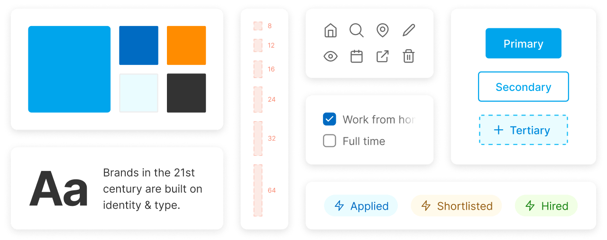

Hello! I'm Kumar Rohit Chandra
Product designer & front-end developer, who designs functional & intuitive digital experiences. I believe in design being a metaphor for simplifying lives. I like to ask questions and experiment with solutions.
Projects
About Me

A self-taught designer with a knack for attention to detail & analysis in design. I love Atomic Design, Inter font and 8 point grids. Figma is my go-to tool for converting ideas to interfaces.
Currently, I am in my final year at JSS Noida, pursuing B.Tech in Electrical Engineering. I value engineering as a methodology to explore and find out solution for real-world problems. It is the foundation to my design thinking.
Beyond design, I have an affinity for cinema; dissecting its many layers from story to cinematography. I appreciate all genres of music, but I loop back to Rock and R&B every once a while. I like to study philosophy, explore conspiracies and watch video essays.
Get in Touch
I'm always interested in working on new products. Thinking about hiring me or would like to discuss a project?
Email me
Internshala
Improving how students find & apply to internships with a better experience
Internshala is the largest internships & training platform in India, which helps students get internships in various profiles and locations. It connects 6 million+ students with 100 thousand+ companies / startups.
As a UI/UX Design intern, I worked with the lead designer, engineers, product managers, and other designers. We built the Internshala design system and redesigned the Android app, to help students with their internship search experience.
Building a design system
We designed an inclusive system that defines digital experiences, consistency and identity for Internshala. Based on Brad Frost’s Atomic Design, we built a comprehensive style guide & component library.
The design system would be implemented to all products from Internshala, including trainings and a new job platform. It helped the whole team by making visual design consistent and scalable and developing new features faster.
Redesigning the Internshala app
I designed the complete end-to-end experience for the Internshala app, based on the new design system. It was focused on clear information, intuitive interactions and unified experience.
Also, I collaborated with engineers for developer hand-offs & finalizing. I conducted a sample user testing with a group of students to identify opportunities and validate the solution.

Do Your Thng
Engaging & educating young users to earn from their social media
Do Your Thng is a shared economy platform for digital profiles. It helps social media users to support and promote the initiatives they love to get rewarded in return.
As a product design intern, I redesigned the app to boost user engagement, establish identity, incentivise rewards and create clarity through interface. I worked remotely in regular collaboration with a product manager and a designer.
Setting the tone with a styleguide
I developed a visual language and styleguide to make designing layouts faster and more coherent. With this, we were able to define constraints and take a lean approach.
Designing delightful interfaces
I designed information architecture and high-fidelity prototypes for the app. I updated the user flow for a transparent system structure which was easily recognisable.
I designed high-fidelity prototypes for onboarding, account, login/signup, and a new digest section. The redesigned app increased the conversation rates by 16%, which helped bring in more campaigns and initiatives onboard.
Later, I worked on admin dashboards for brands & campaign creators. Designed information architecture and wireframes through for better tracking & managing experience.
Nibble Computer Society
Building college community into a peer-to-peer learning experience
Nibble Computer Society is a college society in JSSATE Noida, where a group of students come together to learn and improve their technical skills. Together we built digital projects to help college students and faculties.
As a part of NCS, I designed creatives & interactions for several projects, college fest, online games and platforms. We held daily labs after our classes to work on projects.
As a Creative Head in the final year, I headed the design club at NCS. I mentored students, sharing my learnings in UI/UX design, graphic design, animation and front-end development.
Cryptorai
Simplifying cryptocurrency assets & market tracking for all
Cryptorai is a comprehensive cryptocurrency portfolio tracker and market data application. It aggregates portfolio info from all the major exchanges at one place and provides real-time updates, to make better trading decisions.
As a UI/UX Design intern, I designed information architecture, user flow, wireframes and UI for Crytorai app and webapp, across multiple versions. We started with Material Design and later moved to a new extensive styleguide.